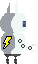
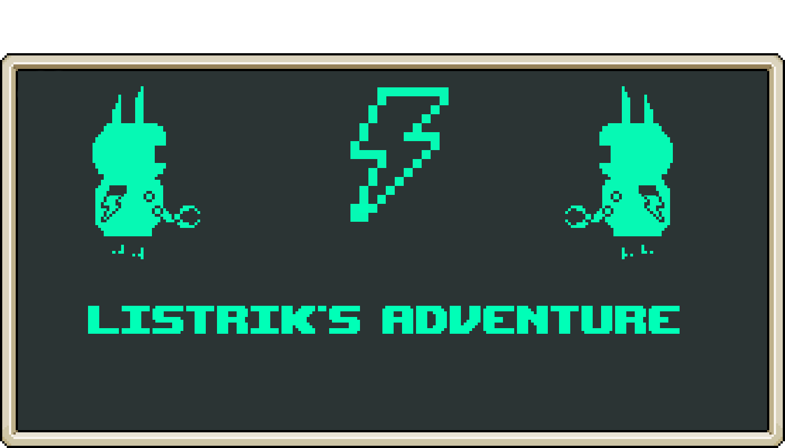
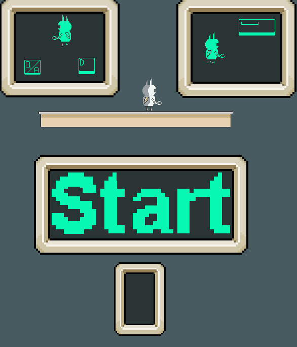
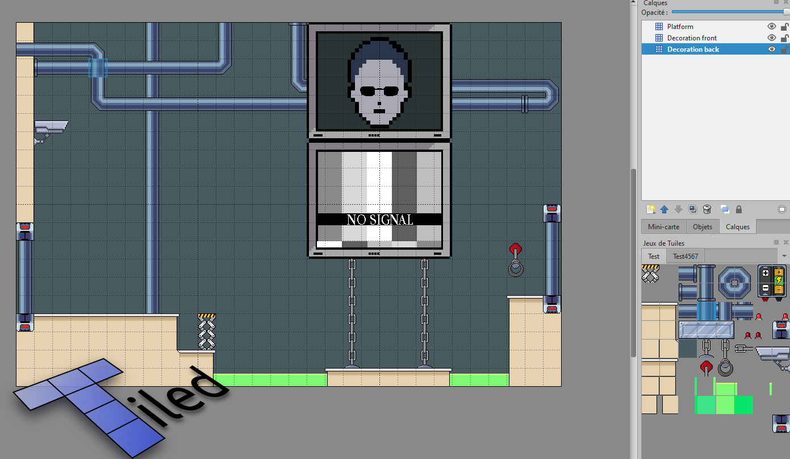

Listrik is my very first video game project, which I developed entirely on my own. It gave me the opportunity to explore and experiment with all the stages of video game production, from start to finish.
It is a single-player puzzle-platformer where the goal is to solve levels designed around a battery mechanic carried by a small robot named Listrik.
The game was designed to run as a web page using JavaScript and the Phaser 3 framework.
Listrik est mon tout premier projet de jeu vidéo, que j'ai développé entièrement seul. Il m'a permis d'explorer et d'expérimenter toutes les étapes de la production d'un jeu, du début à la fin.
C'est un puzzle-platformer solo dont le but est de résoudre des niveaux construits autour d'une batterie portée par un petit robot nommé Listrik.
Le jeu a été conçu pour tourner dans une page web, avec JavaScript et le framework Phaser 3.


Describe the battery mechanic here.
Décris ici la mécanique de la batterie.

Describe how the levels were designed here.
Explique ici comment les niveaux ont été conçus.
Move Q/A D · Jump Z/W · Interact E
Se déplacer Q/A D · Sauter Z/W · Interagir E